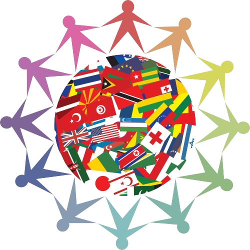

What is VIT-B MUN?
Welcome to MUN-VITB! As the premier Model United Nations (MUN) club at Vellore Institute of Technology, Bhopal, we are dedicated to fostering global citizenship, critical thinking, and diplomacy among our members. Our core activity involves the simulation of United Nations debating, voting, and decisionmaking procedures. Through our dynamic programs and activities, we provide students with unique opportunities to engage with international issues and develop leadership skills that help make a positive impact in their communities